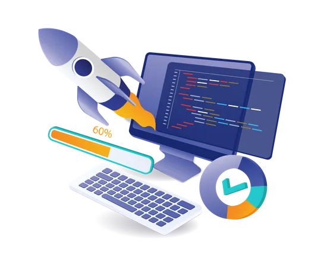

¿Que es Microsoft Windows?
Microsoft Windows es un sistema operativo desarrollado por Microsoft que proporciona una interfaz gráfica de usuario (GUI) para interactuar con la computadora. Es uno de los sistemas operativos más populares y utilizados en computadoras personales y de oficina. Windows gestiona el hardware, permite ejecutar programas y facilita la conexión a redes y la interacción con otros dispositivos.

Nuestros Objetivos
Tiene como propósito fomentar el aprendizaje continuo en habilidades tecnológicas. Al ofrecer recursos estructurados, como lecciones interactivas y evaluaciones, la empresa ayuda a sus usuarios a desarrollar competencias esenciales para el entorno laboral y académico.
Aprende de forma didactica
El aprendizaje didáctico fomenta una comprensión profunda al emplear métodos interactivos y prácticos que facilitan la asimilación de conceptos. Este enfoque promueve el interés del estudiante al integrar actividades dinámicas y creativas que refuerzan el contenido. Además, mejora la retención de información
Sobre Nosotros
En Fiore Di Lusso, creemos en el poder de los jóvenes para transformar el mundo. Nuestra misión es inspirar, conectar y empoderar a través de herramientas digitales que potencien tu creatividad y talento. Aquí encontrarás un espacio para aprender, crecer y compartir tus ideas con una comunidad que valora tu voz. Juntos, construimos un futuro innovador, inclusivo y lleno de posibilidades. ¡Únete a nosotros y deja tu huella en el mundo!